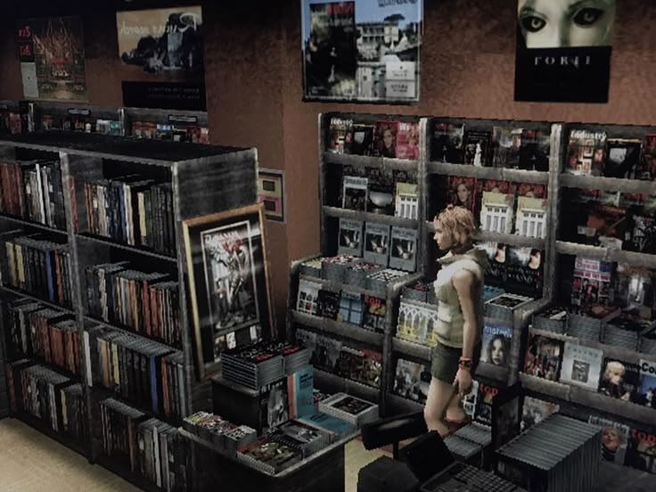

Psychological Horror in Games
How Games Create Fear through Immersion
Psychological horror games immerse players in fear through atmosphere, sound design, and agency. Silent Hill 3 uses fog and eerie soundscapes by Akira Yamaoka to create dread, making every step feel oppressive. The monsters often symbolizing the protagonist’s guilt or trauma, adding a layer of psychological depth. Games like these force players to confront their fears directly, unlike passive film viewing. The interactivity heightens tension—you’re not just watching; you’re surviving. The Forest takes this further with its isolating yet vast island, where the sheer size of the island and what inhabits it in comparison with your lone self creating the horror. These games leave players haunted long after the screen goes dark.
Notable Horror Games.
Silent Hill (1999) set the standard for psychological horror in gaming, with its foggy streets and nightmarish creatures reflecting inner turmoil. The third game in it's franchise, Silent Hill 3 (2003) sees the town's monsters be based on the protagonist, Heather Mason, who is a teenage girl, making the monsters representative of fears she has, (menstrual, stalking, etc). The amazing monster design showcasing these fears is one of the most impressive aspects about the Silent Hill franchise, with the combination of immersion and amazing monsters designs, it creates one of the greatest horror experiences. Hollowbody (2024), a newer indie title, builds on this with a dystopian city where the protagonist searches for her partner. Its retro-tech aesthetic and body horror elements create a chilling atmosphere. Both games use sound and visuals to unsettle, much like Twin Peak’s surreal dread. They show how games can be just as emotionally impactful, sometimes even more than their film & TV counterparts.
